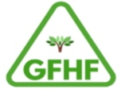
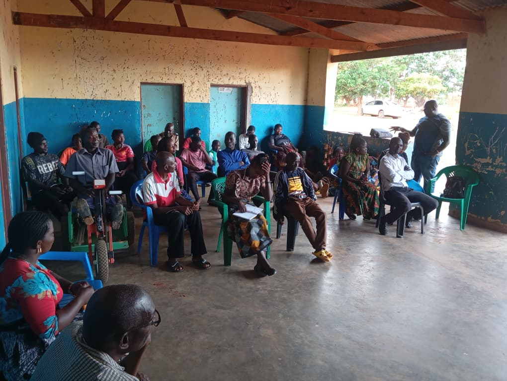
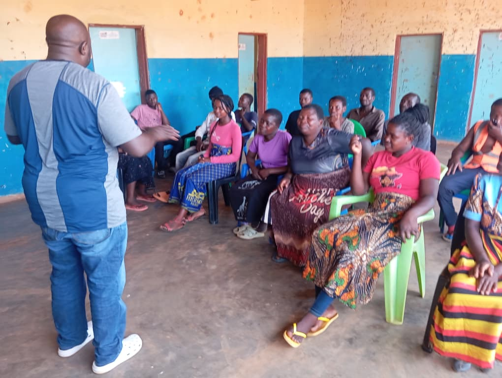

Education Support
Scholarship initiatives have supported refugee communities around Ndzaleka Camp.

Global Faith and Hope FoundationImproving wellbeing, resilience and livelihoods for vulnerable communities.
Scholarship initiatives have supported refugee communities around Ndzaleka Camp.

Work with youth organizations on leadership, empowerment and responsible resource management.

Community engagement around tree replenishment and environmental conservation.

Climate-smart agriculture, drought-resistant crops, food security and sustainable livelihoods.

HIV/AIDS awareness, WASH, cholera prevention, health referrals and social support.

Strengthening community structures and collaboration with local and district authorities.